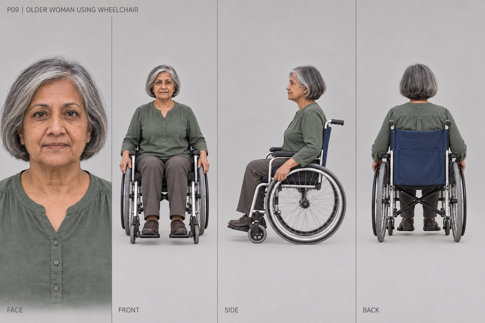

Human character references
13 character sheets for SGMTS Game: 12 pedestrians and a cyclist. Face, front, side and back views, with seated wheelchair references and a cycling inset.
Proposed modelling references · 29 September 2026 · Click any sheet for its original PNG. Roster and modelling notes · Prompts
09 · Older woman using wheelchair — pedestrian_9
